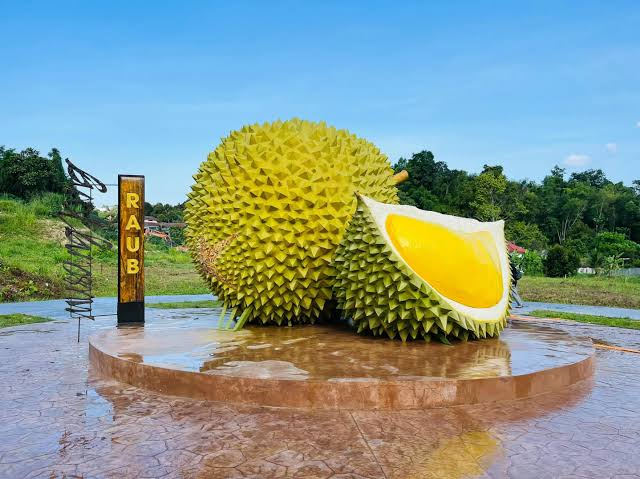
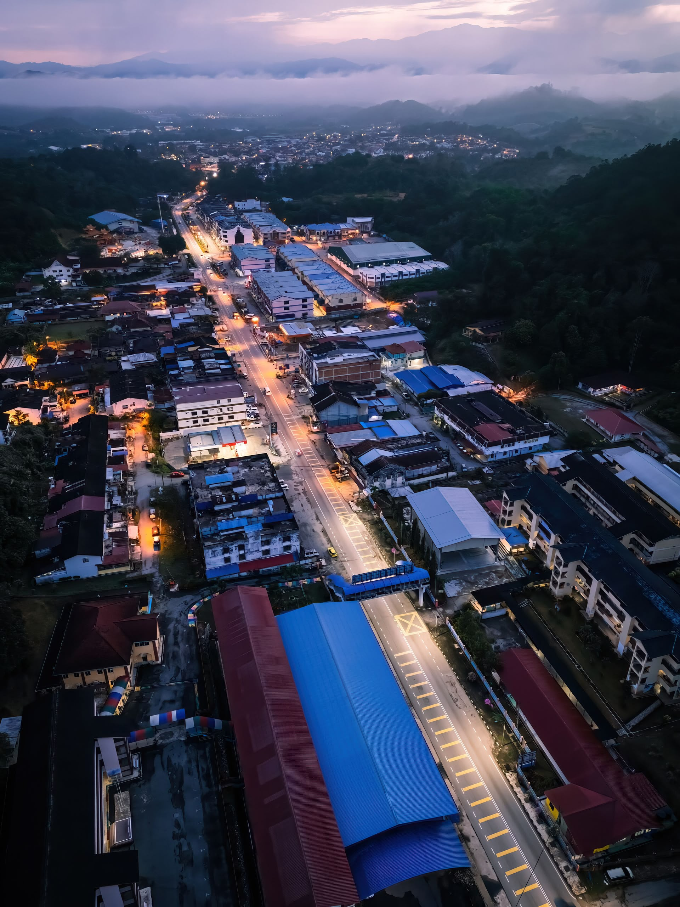

Discover My Hometown
My hometown at Raub Pahang. Raub has a unique culture and a relaxing atmosphere that makes it special. I love my hometown because it is a peaceful place where I can create many wonderful memories with my family and friends. I am proud to be from Raub, Pahang, and I hope more people will visit and discover the beauty of my hometown. .


What Makes My Hometown Special?
My hometown is special because of its beautiful scenery, local culture and memorable experiences and Raub is a charming, historic town in Pahang known for its gold-mining roots and pre-war shophouses. Across Malaysia, it is famous for its world-class Musang King durians and delicious local food, from traditional Hakka dishes to Hainanese coffee. Surrounded by lush nature, it is also close to scenic spots like the Lata Jarum waterfall and Bukit Fraser. Above all, Raub is special for its peaceful pace of life and warm, friendly community..
Next Page